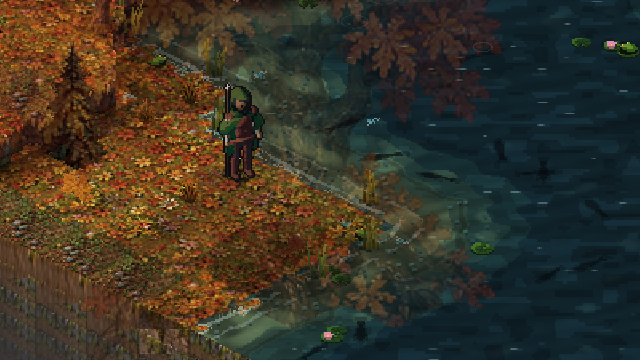

Day 9: colossi, currents and coastlines
30 September 2026 · Day 9
Swimming, paddled boats and a deep-ocean ambush are no longer "in review" — you can wade in, paddle out and get pulled under. Alongside that, eight design spikes lay the groundwork for world-scale creatures that don't play like an oversized enemy with a bigger health bar.

Into the water, and further out
The last post described swimming and boats as still open for review. Both are merged now, along with the deep-ocean ambush they were built to lead to. You can wade from the shore into deeper water, then swim; a paddled boat lets you cross open water instead, and can carry cargo along with you. Push out far enough and something in the deep can take an interest in your hull.
This came out of a genuinely messy stack: swimming, the ocean encounter and the boats work had all been developed as separate branches sharing the same input-handling repair underneath them, and merging them without losing any of that history took several passes. The three are stable together now, with the full test suite passing on the merged result. Not yet in this: the Lost Continent, diving gear and underwater combat explored alongside swimming remain a design idea, not a playable feature, and boats still need a hands-on pass for how they feel to steer.
Eight ways to be enormous
A dragon, a leviathan or a world-shaping worm should not just be an ordinary enemy scaled up. This week's work is eight design explorations, each taking one honest answer to what a colossal creature actually does all the time it isn't fighting you. A sleeping giant can be discovered from an overlook and walked beside while it stays alive and reactive. A migrating one behaves as a regional event, with a route, trampled ground and tracks, rather than a creature replaying itself in a loop. A burrowing one opens trenches, sinkholes and tunnel mouths across a region as it passes beneath. A dying one becomes a temporary ecosystem, a wounded leviathan or beached dragon reshaping the area around it for months before it's gone, and once dead its bones and ribs become geography rather than decoration, with harvesting and communities that grow up around them. A divine one gathers belief and reverence from what different communities choose to believe about it, not from its size alone. A predatory one carries territory, hunger and telegraphed danger a player can read and escape, distinct from an ordinary fight. And an unknown one stays a mystery, giving only evidence: tracks, disturbed ground, a story that never fully resolves.
None of this is a colossus you can meet in the game yet. What's merged is the underlying idea and the rules for each case, and how a moving giant can keep going without every region around it needing to stay loaded. Building an actual creature on top of any of these is the next, separate piece of work.
Next
Turning the colossus explorations into one real, renderable creature is the obvious next step, along with a hands-on pass on how swimming and boats actually feel to play. Merchants, wandering traders and a personal library of procedural books are still stacked up in review, along with connecting the world-streaming foundation to real travel across a continent instead of a bounded starting region.
End of day 9: swimming, boats and a deep-ocean ambush now playable, eight colossus explorations in the design, and the water world getting bigger by the day.